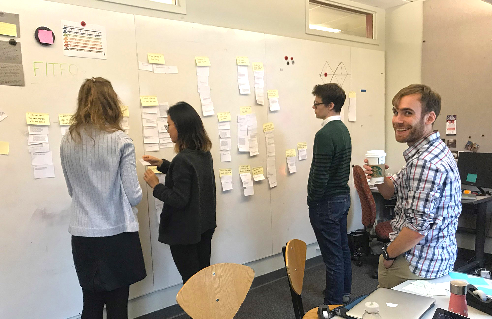
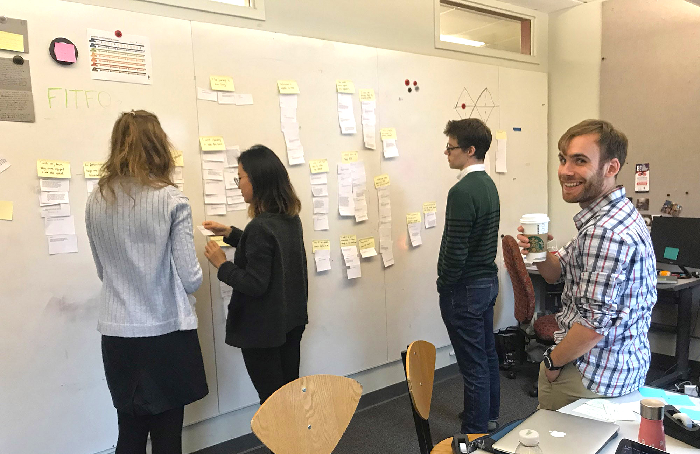

Our Team
Project Manager
Amanda Kennedy is our project manager. Before the MHCI program, she led user research at a digital health startup and her user research consultancy, Lanternalia. She will use design to improve civic service delivery after graduation at Nava. She has been honored to work with Boulder Crest to support veterans who have served our country.

User Research Lead
Kevin Seelaus

Kevin Seelaus is from Philadelphia and has worked as a research specialist for psychology labs at the University of Pennsylvania and University of Pittsburgh studying schizophrenia, neurodevelopment, and cognitive functioning. He feels lucky to have learned so much about technology and design through such an important and fulfilling project.

Service Design Lead
Zixuan (Liz) Li is a UX designer and user researcher. Prior to the MHCI program, she studied architecture and interned as a UX designer at Accenture Interactive. She has an interest in data science and machine learning and believes that good design is crucial for technology to better serve people. She really enjoyed working on this project with the team.
UX Design Lead
Tyler Stern is originally from New Jersey but grew up in Atlanta, Georgia. It was there that he completed design and video work for the Residence Life office at Emory University and a children’s advocacy non-profit called Voices for Georgia’s Children. Tyler is grateful to have had the opportunity to work with Boulder Crest and create designs that promote growth mindsets and positive worldviews.
Design Technologist
Ja Young Lee (Young) is a designer and a front-end developer. She studied Fine Arts in
undergraduate
and worked as a UX designer in an EdTech startup in New York City before joining the MHCI
program. She is excited to see how technology would help Boulder Crest and their students in
this project.